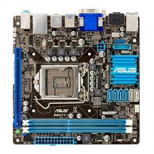

Building NAS - hardware
For a long time I've wandered the voids of the intertubes in search for the parts for my NAS/backup/home server solution.
Online backup solutions are fine to some extent, however, someone else than you then is going through that cat picture collections of yours and other private stuff. Also the cloud tends to not be the cheapest option possible.
Case
{kind=link}
The need for moar virtual disk space calls for moar physical disk space. To build any reasonable RAID solution you need 4-5 disks at least, plus maybe one for system disk. That is a minimum of 6 disk slots in the computer case. As I have quite some variety of disks laying around I'd like this case to have an option for using either 3.5" or 2.5" disks. Ah, and the whole thing should not take big amounts of space. Hence "Node 304" by Fractal Design.
Although I intend my NAS to be fanless in the future, I couldn't resist to leave the original fans connected. These are beautiful, supersilent, hydraulic bearing fans, all included in the Node's package.
There are really only two things that you need to be wary of: metal where the screwholes are is very soft and it is easy to damage - and that if you have a PSU without detachable cables you're going to have bad time fitting these inside.
By the way, other small but nice thing is a user manual for this case. Nice paper, nice clean print and friendly attitude. Attention to details !
Motherboard 
{kind=link}
What board supports at least 6 SATA disks, has low power consuption and fits into miniITX format ? Easily obtainable in central Europe ? And not super expensive ?
It took almost 3 months for me to find it, I present to you Asus P8H77-I. All the usual stuff, most of it I don't need, frankly and not so low on power, but hey - 6 SATA in miniITX.
One caveat - it needs 2 power cables connected to function. The usual 24-pin EATX and also 4-pin ATX 12V also called P4. What if your PSU has only those fancy new EPS8 and EPS6 as mine do ? Fear not, connect half of the EPS8 into P4 port and everything shall be okay.